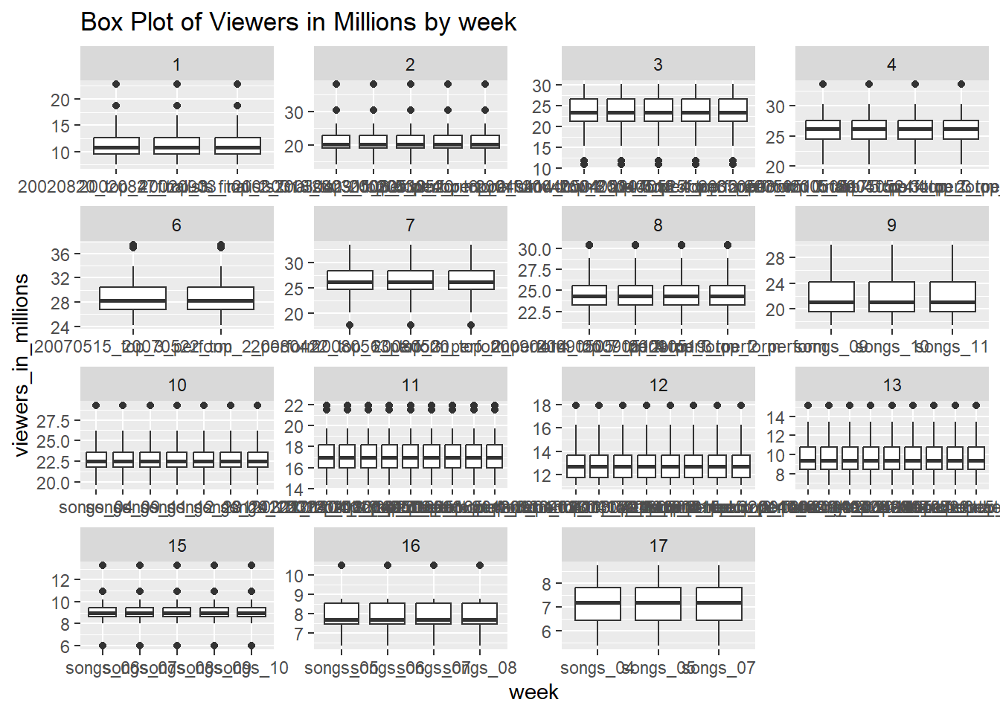
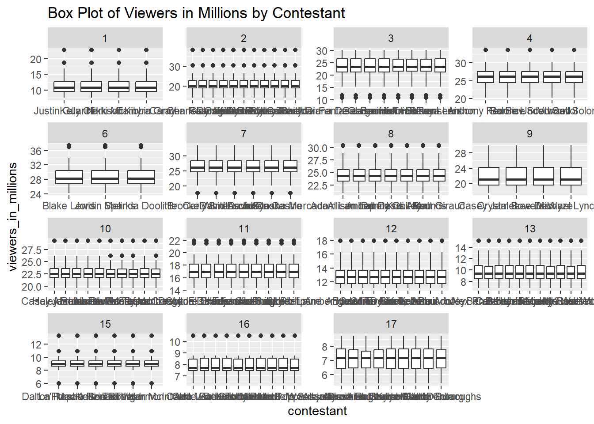
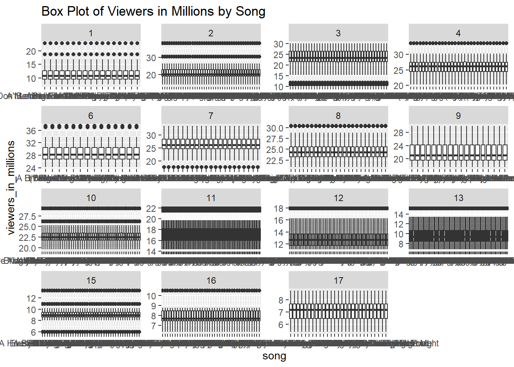
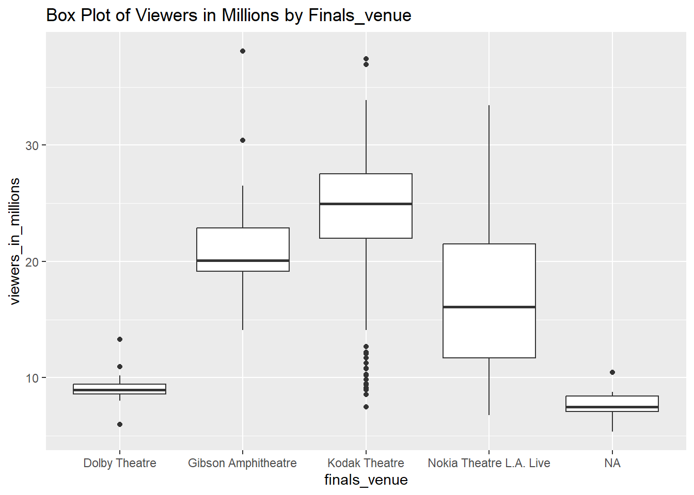
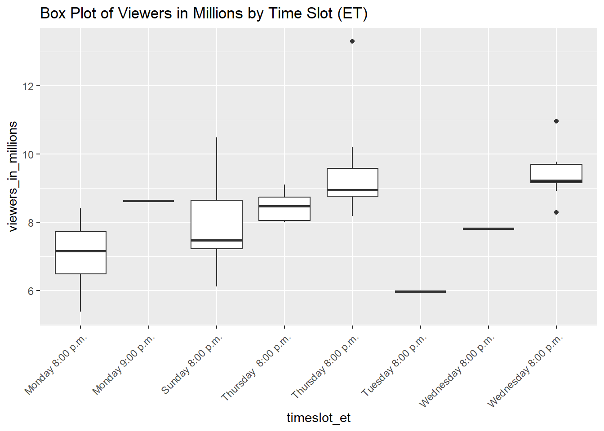
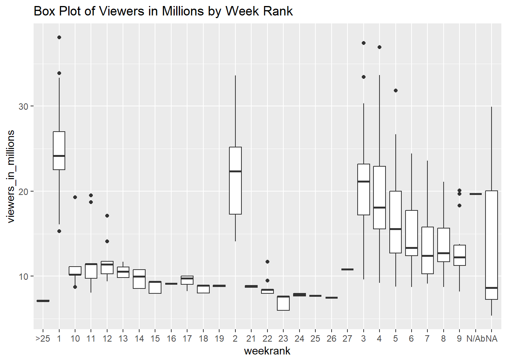
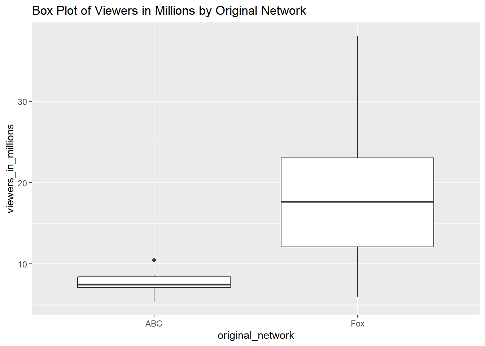
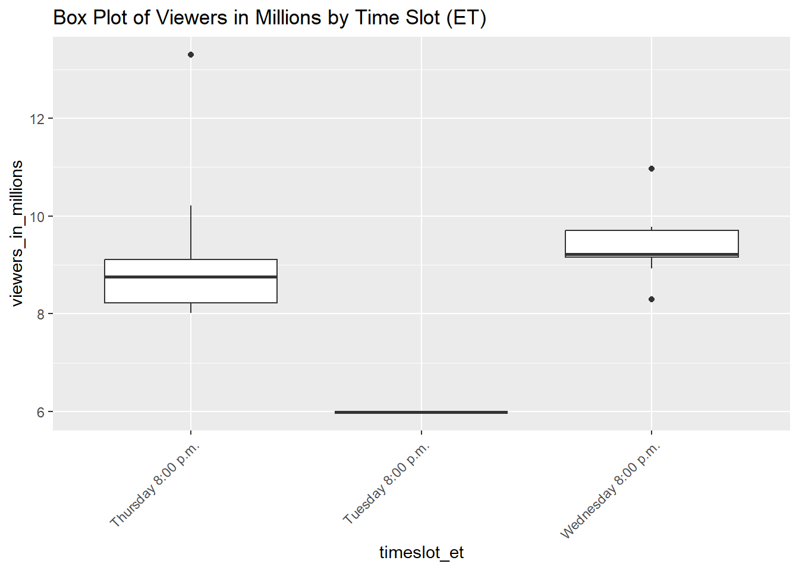
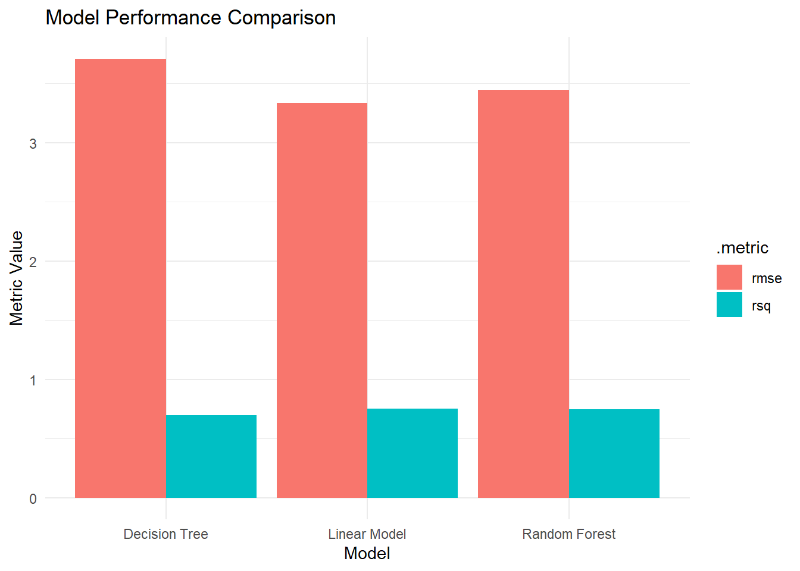
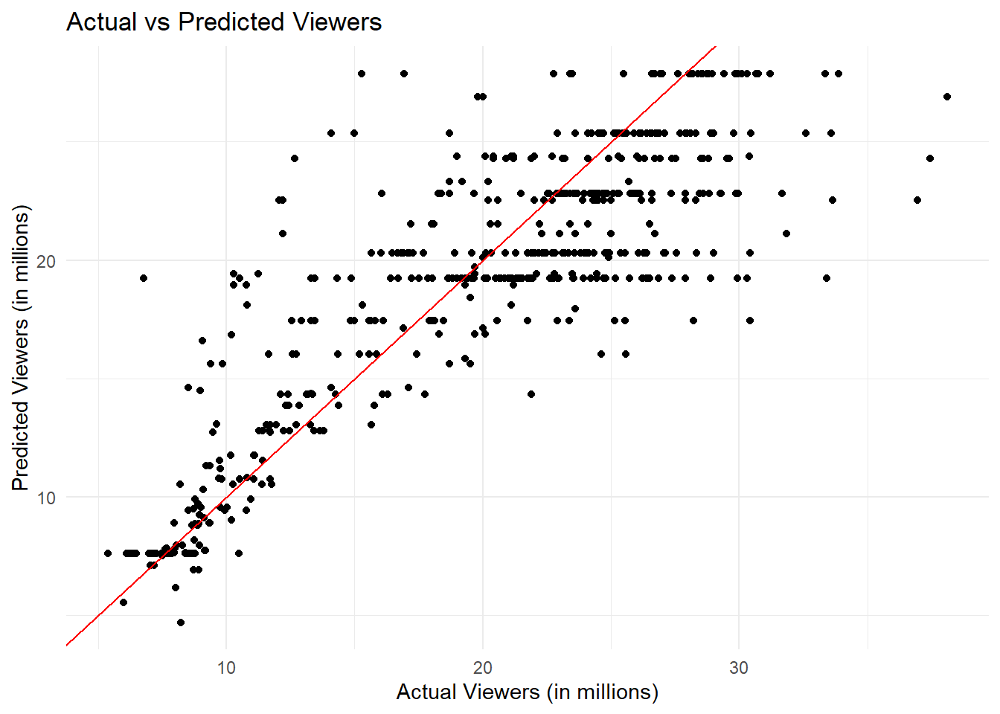

# Clean data provided by <https://github.com/kkakey/American_Idol>. No cleaning was necessary.auditions <- readr::read_csv("https://raw.githubusercontent.com/kkakey/American_Idol/main/metadata/auditions.csv")
Rows: 142 Columns: 12
── Column specification ────────────────────────────────────────────────────────
Delimiter: ","
chr (6): audition_city, audition_venue, episodes, episode_air_date, callbac...
dbl (2): season, tickets_to_hollywood
date (4): audition_date_start, audition_date_end, callback_date_start, callb...
ℹ Use `spec()` to retrieve the full column specification for this data.
ℹ Specify the column types or set `show_col_types = FALSE` to quiet this message.
Rows: 456 Columns: 46
── Column specification ────────────────────────────────────────────────────────
Delimiter: ","
chr (44): place, gender, contestant, top_36, top_36_2, top_36_3, top_36_4, t...
dbl (1): season
lgl (1): comeback
ℹ Use `spec()` to retrieve the full column specification for this data.
ℹ Specify the column types or set `show_col_types = FALSE` to quiet this message.
Rows: 190 Columns: 6
── Column specification ────────────────────────────────────────────────────────
Delimiter: ","
chr (5): Contestant, Birthday, Birthplace, Hometown, Description
dbl (1): Season
ℹ Use `spec()` to retrieve the full column specification for this data.
ℹ Specify the column types or set `show_col_types = FALSE` to quiet this message.
Rows: 593 Columns: 17
── Column specification ────────────────────────────────────────────────────────
Delimiter: ","
chr (12): episode, airdate, 18_49_rating_share, timeslot_et, dvr_18_49, dvr_...
dbl (4): season, show_number, viewers_in_millions, nightlyrank
lgl (1): ref
ℹ Use `spec()` to retrieve the full column specification for this data.
ℹ Specify the column types or set `show_col_types = FALSE` to quiet this message.
Rows: 18 Columns: 10
── Column specification ────────────────────────────────────────────────────────
Delimiter: ","
chr (8): winner, runner_up, original_release, original_network, hosted_by, j...
dbl (2): season, no_of_episodes
ℹ Use `spec()` to retrieve the full column specification for this data.
ℹ Specify the column types or set `show_col_types = FALSE` to quiet this message.
Rows: 2429 Columns: 8
── Column specification ────────────────────────────────────────────────────────
Delimiter: ","
chr (7): season, week, contestant, song, artist, song_theme, result
dbl (1): order
ℹ Use `spec()` to retrieve the full column specification for this data.
ℹ Specify the column types or set `show_col_types = FALSE` to quiet this message.
# A tibble: 6 × 6
Contestant Birthday Birthplace Hometown Description Season
<chr> <chr> <chr> <chr> <chr> <dbl>
1 Kelly Clarkson 24-Apr-82 Fort Worth, Texas Burleso… "She perfo… 1
2 Justin Guarini 28-Oct-78 Columbus, Georgia Doylest… "He perfor… 1
3 Nikki McKibbin 28-Sep-78 Grand Prairie, Texas <NA> "She had p… 1
4 Tamyra Gray 26-Jul-79 Takoma Park, Maryla… Atlanta… "She had a… 1
5 R. J. Helton 17-May-81 Pasadena, Texas Cumming… "J. Helton… 1
6 Christina Christian 21-Jun-81 Brooklyn, New York <NA> ".Christin… 1
head(ratings)
# A tibble: 6 × 17
season show_number episode airdate `18_49_rating_share` viewers_in_millions
<dbl> <dbl> <chr> <chr> <chr> <dbl>
1 1 1 Auditions June 1… 4.8 9.85
2 1 2 Hollywood… June 1… 5.2 11.2
3 1 3 Top 30: G… June 1… 5.2 10.3
4 1 4 Top 30: G… June 1… 4.7 9.47
5 1 5 Top 30: G… June 2… 4.5 9.08
6 1 6 Top 30: G… June 2… 4.2 8.53
# ℹ 11 more variables: timeslot_et <chr>, dvr_18_49 <chr>,
# dvr_viewers_millions <chr>, total_18_49 <chr>,
# total_viewers_millions <chr>, weekrank <chr>, ref <lgl>, share <chr>,
# nightlyrank <dbl>, rating_share_households <chr>, rating_share <chr>
head(seasons)
# A tibble: 6 × 10
season winner runner_up original_release original_network hosted_by judges
<dbl> <chr> <chr> <chr> <chr> <chr> <chr>
1 1 Kelly Cla… Justin G… June 11 (2002-0… Fox Ryan Sea… Paula…
2 2 Ruben Stu… Clay Aik… January 21 (200… Fox Ryan Sea… Paula…
3 3 Fantasia … Diana De… January 19 (200… Fox Ryan Sea… Paula…
4 4 Carrie Un… Bo Bice January 18 (200… Fox Ryan Sea… Paula…
5 5 Taylor Hi… Katharin… January 17 (200… Fox Ryan Sea… Paula…
6 6 Jordin Sp… Blake Le… January 16 (200… Fox Ryan Sea… Paula…
# ℹ 3 more variables: no_of_episodes <dbl>, finals_venue <chr>, mentor <chr>
head(songs)
# A tibble: 6 × 8
season week order contestant song artist song_theme result
<chr> <chr> <dbl> <chr> <chr> <chr> <chr> <chr>
1 Season_01 20020618_top_30_gro… 1 Tamyra Gr… And … Jenni… <NA> Advan…
2 Season_01 20020618_top_30_gro… 2 Jim Verra… When… Doris… <NA> Advan…
3 Season_01 20020618_top_30_gro… 3 Adriel He… I'll… Edwin… <NA> Elimi…
4 Season_01 20020618_top_30_gro… 4 Rodesia E… Dayd… The M… <NA> Elimi…
5 Season_01 20020618_top_30_gro… 5 Natalie B… Crazy Patsy… <NA> Elimi…
6 Season_01 20020618_top_30_gro… 6 Brad Estr… Just… James… <NA> Elimi…
Data cleaning/wrangling - I converted every chr column to a factor so I can easily plot them if needed to. The only dataset that I removed NA from was the songs dataset.
# Load necessary librarieslibrary(dplyr)
Attaching package: 'dplyr'
The following objects are masked from 'package:stats':
filter, lag
The following objects are masked from 'package:base':
intersect, setdiff, setequal, union
library(tidyr)
Warning: package 'tidyr' was built under R version 4.3.3
library(ggplot2)
Warning: package 'ggplot2' was built under R version 4.3.3
library(ggcorrplot)
Warning: package 'ggcorrplot' was built under R version 4.3.3
data_combined <- songs %>%inner_join(finalists, by =c("season", "contestant"), relationship ="many-to-many")data_combined <- data_combined %>%left_join(seasons, by =c("season"), relationship ="many-to-many")data_combined <- data_combined %>%inner_join(ratings, by ="season", relationship ="many-to-many")
I want to see what effects the overall viewers in millions, below is for the numeric variables only.To determine the categorical variables I will be going through visualizations.
library(caret)
Loading required package: lattice
library(randomForest)
Warning: package 'randomForest' was built under R version 4.3.3
randomForest 4.7-1.1
Type rfNews() to see new features/changes/bug fixes.
Attaching package: 'randomForest'
The following object is masked from 'package:ggplot2':
margin
The following object is masked from 'package:dplyr':
combine
numeric_vars <- data_combined %>%select_if(is.numeric)cor_matrix <-cor(numeric_vars, use ="complete.obs")
Warning in cor(numeric_vars, use = "complete.obs"): the standard deviation is
zero
viewers_in_millions order show_number nightlyrank
1.000000e+00 -1.066709e-20 -1.893358e-01 -4.447735e-01
#Box Plot of Viewers in Millions by weekggplot(data_combined, aes(x = week, y = viewers_in_millions)) +geom_boxplot() +facet_wrap(~season, scales ="free")+ggtitle("Box Plot of Viewers in Millions by week")
Warning: Removed 118 rows containing non-finite outside the scale range
(`stat_boxplot()`).

#Box Plot of Viewers in Millions by Contestantggplot(data_combined, aes(x = contestant, y = viewers_in_millions)) +geom_boxplot() +facet_wrap(~season, scales ="free")+ggtitle("Box Plot of Viewers in Millions by Contestant")
Warning: Removed 118 rows containing non-finite outside the scale range
(`stat_boxplot()`).

#Box Plot of Viewers in Millions by Songggplot(data_combined, aes(x = song, y = viewers_in_millions)) +geom_boxplot() +facet_wrap(~season, scales ="free")+ggtitle("Box Plot of Viewers in Millions by Song")
Warning: Removed 118 rows containing non-finite outside the scale range
(`stat_boxplot()`).

#Box Plot of Viewers in Millions by Finals_venueggplot(data_combined, aes(x = finals_venue, y = viewers_in_millions)) +geom_boxplot() +ggtitle("Box Plot of Viewers in Millions by Finals_venue")
Warning: Removed 118 rows containing non-finite outside the scale range
(`stat_boxplot()`).

#Box Plot of Viewers in Millions by Time Slot (ET), also removing all timeslots with NAdf <- data_combined %>%filter(!is.na(timeslot_et))ggplot(df, aes(x = timeslot_et, y = viewers_in_millions)) +geom_boxplot() +ggtitle("Box Plot of Viewers in Millions by Time Slot (ET)")+theme(axis.text.x =element_text(angle =45, hjust =1))

#Box Plot of Viewers in Millions by Week Rankggplot(data_combined, aes(x = weekrank, y = viewers_in_millions)) +geom_boxplot() +ggtitle("Box Plot of Viewers in Millions by Week Rank")
Warning: Removed 118 rows containing non-finite outside the scale range
(`stat_boxplot()`).

#Box Plot of Viewers in Millions by Original Networkggplot(data_combined, aes(x = original_network, y = viewers_in_millions)) +geom_boxplot() +ggtitle("Box Plot of Viewers in Millions by Original Network")
Warning: Removed 118 rows containing non-finite outside the scale range
(`stat_boxplot()`).

It appears that original network, week_rank, timeslot_et, and finals_venue all show a pattern when pertaining to viewers in millions. The only numerical predictor that shows a negative relationship between views is nightly rank.
Based on my initial findings my hypothesis is that nightly rank, original network, week_rank, timeslot_et, and finals_venue all have an effect on the overall views one episode can get.
data <- new_data %>%mutate(nightlyrank =ifelse(is.na(nightlyrank), median(nightlyrank, na.rm =TRUE), nightlyrank))# If necessary, remove rows with missing values in other variablesnew_data <-drop_na(data)#normalize numerical variablenew_data <- new_data %>%mutate(nightlyrank =scale(nightlyrank))
Here I fix the issue we see in the visualization of 2 thursdays and wednesdays
library(stringr)new_data <- new_data %>%mutate(timeslot_et =str_squish(timeslot_et))ggplot(new_data, aes(x = timeslot_et, y = viewers_in_millions)) +geom_boxplot() +ggtitle("Box Plot of Viewers in Millions by Time Slot (ET)")+theme(axis.text.x =element_text(angle =45, hjust =1))

After clearing the rows with missing numerical variables, it appears a whole day of the week is taken out of the data, there seems to still be a relationship between viewership and the time of week, however I am probably going to throw this predictor out due to the lack of variables.
# Remove rows with missing values in the response variabletrain_data <- train_data %>%filter(!is.na(viewers_in_millions))# Impute missing values in the response variable with the meanmean_value <-mean(train_data$viewers_in_millions, na.rm =TRUE)train_data$viewers_in_millions[is.na(train_data$viewers_in_millions)] <- mean_valuelibrary(tidymodels)
Warning: package 'tidymodels' was built under R version 4.3.3
# Define the recipe with step_zv() to remove zero-variance columnsrecipe <-recipe(viewers_in_millions ~ ., data = train_data) %>%step_unknown(all_nominal(), -all_outcomes()) %>%# Handle unknown levelsstep_impute_mode(all_nominal(), -all_outcomes()) %>%# Impute missing values in categorical variablesstep_dummy(all_nominal(), -all_outcomes()) %>%# Convert categorical variables to dummy variablesstep_zv(all_predictors()) %>%# Remove zero-variance columnsstep_impute_mean(all_numeric(), -all_outcomes()) %>%# Impute missing values in numerical variablesstep_normalize(all_numeric(), -all_outcomes()) # Normalize numerical variables# Check for missing values in the training datasum(is.na(train_data))
[1] 19426
3 Models I want to use and the workflow for them
# Linear Modellinear_model <-linear_reg() %>%set_engine("lm") %>%set_mode("regression")# Decision Treedecision_tree_model <-decision_tree() %>%set_engine("rpart") %>%set_mode("regression")# Random Forestrandom_forest_model <-rand_forest() %>%set_engine("ranger") %>%set_mode("regression")# Re-create the workflows with the updated recipelinear_workflow <-workflow() %>%add_recipe(recipe) %>%add_model(linear_model)decision_tree_workflow <-workflow() %>%add_recipe(recipe) %>%add_model(decision_tree_model)random_forest_workflow <-workflow() %>%add_recipe(recipe) %>%add_model(random_forest_model)# Fit the modelslinear_fit <-fit(linear_workflow, data = train_data)decision_tree_fit <-fit(decision_tree_workflow, data = train_data)random_forest_fit <-fit(random_forest_workflow, data = train_data)
Cross Validation
# Define cross-validation foldscv_folds <-vfold_cv(train_data, v =5)# Evaluate Linear Modellinear_results <-fit_resamples(linear_workflow, resamples = cv_folds)
→ A | warning: prediction from rank-deficient fit; consider predict(., rankdeficient="NA")
# Print metrics for comparisonprint(linear_metrics)
# A tibble: 2 × 6
.metric .estimator mean n std_err .config
<chr> <chr> <dbl> <int> <dbl> <chr>
1 rmse standard 3.34 5 0.0171 Preprocessor1_Model1
2 rsq standard 0.753 5 0.00332 Preprocessor1_Model1
print(decision_tree_metrics)
# A tibble: 2 × 6
.metric .estimator mean n std_err .config
<chr> <chr> <dbl> <int> <dbl> <chr>
1 rmse standard 3.71 5 0.0161 Preprocessor1_Model1
2 rsq standard 0.694 5 0.00393 Preprocessor1_Model1
print(random_forest_metrics)
# A tibble: 2 × 6
.metric .estimator mean n std_err .config
<chr> <chr> <dbl> <int> <dbl> <chr>
1 rmse standard 3.44 5 0.00992 Preprocessor1_Model1
2 rsq standard 0.746 5 0.00258 Preprocessor1_Model1
Based on the metrics printed above, the model that I will be chosing is the linear model due to it having the highest rsq and lowest rmse.
Model Fit
final_model_fit <-fit(linear_workflow, data = train_data)# Predict on test datatest_predictions <-predict(final_model_fit, new_data = test_data) %>%bind_cols(test_data)
Warning in predict.lm(object = object$fit, newdata = new_data, type =
"response", : prediction from rank-deficient fit; consider predict(.,
rankdeficient="NA")
# Evaluate performance on test datatest_metrics <-metrics(test_predictions, truth = viewers_in_millions, estimate = .pred)print(test_metrics)
# A tibble: 3 × 3
.metric .estimator .estimate
<chr> <chr> <dbl>
1 rmse standard 3.32
2 rsq standard 0.762
3 mae standard 2.35
library(ggplot2)# Combine metrics for plottingmetrics_combined <-bind_rows( linear_metrics %>%mutate(model ="Linear Model"), decision_tree_metrics %>%mutate(model ="Decision Tree"), random_forest_metrics %>%mutate(model ="Random Forest"))# Plot performance metricsggplot(metrics_combined, aes(x = model, y = mean, fill = .metric)) +geom_bar(stat ="identity", position ="dodge") +labs(title ="Model Performance Comparison", x ="Model", y ="Metric Value") +theme_minimal()

When chosing the final model, it was a close call, however it is obvious when looking at the rmse column that the linear model was the best fitted model of the 3 I chose to test.
# Visualization of predictions vs actual valuesggplot(test_predictions, aes(x = viewers_in_millions, y = .pred)) +geom_point() +geom_abline(slope =1, intercept =0, color ="red") +labs(title ="Actual vs Predicted Viewers", x ="Actual Viewers (in millions)", y ="Predicted Viewers (in millions)") +theme_minimal()
Warning: Removed 42 rows containing missing values or values outside the scale range
(`geom_point()`).

As shown in the plot above, the prediction line roughly matches with the data, making this a good model to use when predicting viewers, however I think there is still some work to be done, whether it be recollecting data or me looking harder for other predictors to make this model improve.